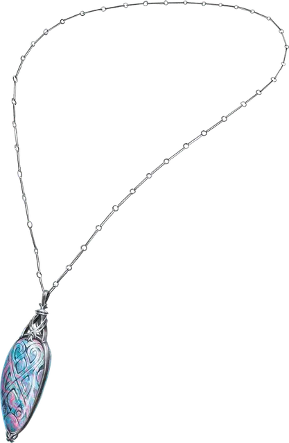

Амулет тёмного осколка
Dark Shard Amulet
Чудесный предмет, обычный (требуется настройка колдуном)

Рекомендованная стоимость 50-100 зм
Этот амулет выполнен из цельного осколка упругого экстрапланарного материала, происходящего из царства покровителя вашего колдуна. Пока он надет на вас, вы получаете следующие преимущества:
- Вы можете использовать этот амулет как магическую фокусировку для своих заклинаний колдуна.
- Вы можете попробовать наложить заговор, которого не знаете. Этот заговор должен быть в списке заклинаний колдуна, и вы должны преуспеть в проверке Интеллекта (Магия) Сл 10. При успехе вы накладываете заклинание. При провале и заклинание, и действие, которое было предназначено для накладывания заклинания, теряется. В любом случае вы не можете снова использовать это свойство, пока не завершите продолжительный отдых.